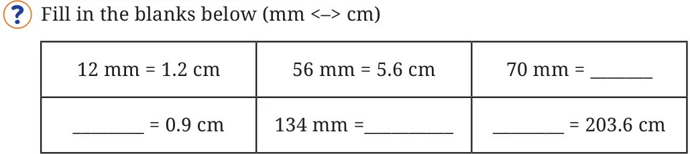
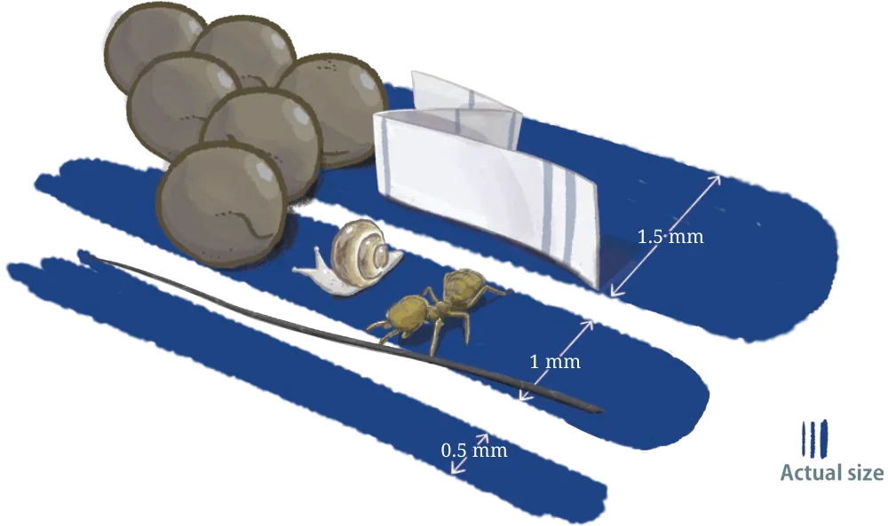
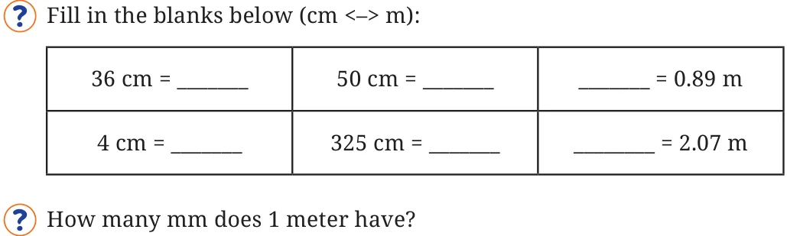
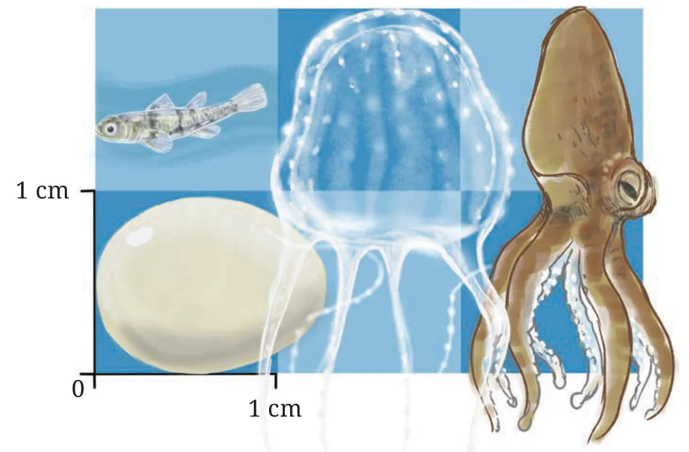

3.5 Units of Measurement
We have been using a scale to measure length for a few years. We already know that 1 cm \(= 10\) mm (millimeters).
How many cm is 1 mm?
1 mm \(= \frac{1}{10}\) cm \(= 0.1\) cm (i.e., one-tenth of a cm).
How many cm is (a) 5 mm? (b) 12 mm?
5 mm \(= \frac{5}{10}\) cm \(= 0.5\) cm
12 mm \(= 10\) mm \(+ 2\) mm
\(= 1\) cm \(+ \frac{2}{10}\) cm
\(= 1.2\) cm.
How many mm is 5.6 cm? Since each cm has 10 mm, 5.6 cm (5 cm \(+ 0.6\) cm) is 56 mm.

The illustration below shows how small some things are! Try taking an approximate measurement of each.

- The three blue stripes represent the typical relative sizes of pen strokes: fine stroke, medium stroke, and bold stroke.
- A human hair is about 0.1 mm in thickness.
- The thickness of a newspaper can range from 0.05 to 0.08 mm.
- Mustard seeds have a thickness of 1–2 mm.
- The smallest ant species discovered so far, Carabera Bruni, has a total length of 0.8–1 mm. They are found in Sri Lanka and China.
- The smallest land snail species discovered so far, Acmella Nana, has a shell diameter of 0.7 mm. They are found in Malaysia.
We also know that 1 m \(= 100\) cm. Based on this, we can say that
\[1\ \text{cm} = \frac{1}{100}\ \text{m} = 0.01\ \text{m}.\]
How many m is (a) 10 cm? (b) 15 cm?
10 cm \(= \frac{1}{10}\) m \(= 0.1\) m
Since each cm is one-hundredth of a meter, 15 cm can be written as
15 cm \(= \frac{15}{100}\) m
\(= \frac{10}{100}\) m \(+ \frac{5}{100}\) m
\(= \frac{1}{10}\) m \(+ \frac{5}{100}\) m
\(= 0.15\) m.

Can we write 1 mm \(= \frac{1}{1000}\) m?
Here, we have some more interesting facts about small things in nature!

- The egg of a hummingbird typically is 1.3 cm long and 0.9 cm wide.
- The Philippine Goby is about 0.9 cm long. It can be found in the Philippines and other Southeast Asian countries.
- The smallest known jellyfish, Irukandji, has a belly size of 0.5–2.5 cm. Its tentacles can be as long as 1 m. They are found in Australia. Its venom can be fatal to humans.
- The Wolfi octopus, also known as the Star-sucker Pygmy Octopus, is the smallest known octopus in the world. Their typical size is around 1–2.5 cm and they weigh less than 1 gm. They are found in the Pacific Ocean.